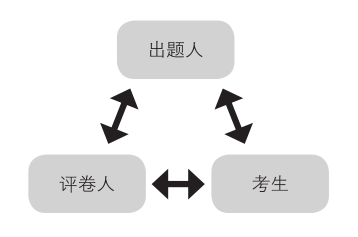

一、考试中一个有趣的三角关系

在一次考试中，你和出题人、评卷人之间是一种很有意思的三角关系。你根据出题人出的题目来写下自己的答案；评卷人根据你写的答案给你评分；评卷人也会通过对你的答题情况的评判，对出题人给予反馈。
在这个三角关系中，因为出题人和评卷人都是一个考试体系里面的工作人员，虽然他们不一定能见面，但他们有共同的组织者，也有共同的考试标准。作为考生的你，夹在中间，要想拿下高分，你就得照顾好两方面。一方面你要根据出题人出的题目，把题目做出来；另一方面你要把握评卷人的评分标准，做出好的解答，尽最大可能地拿到高分。
所以，想要拿到高分你需要做到两点：第一，拥有出题人思维；第二，有很强的得分技巧。